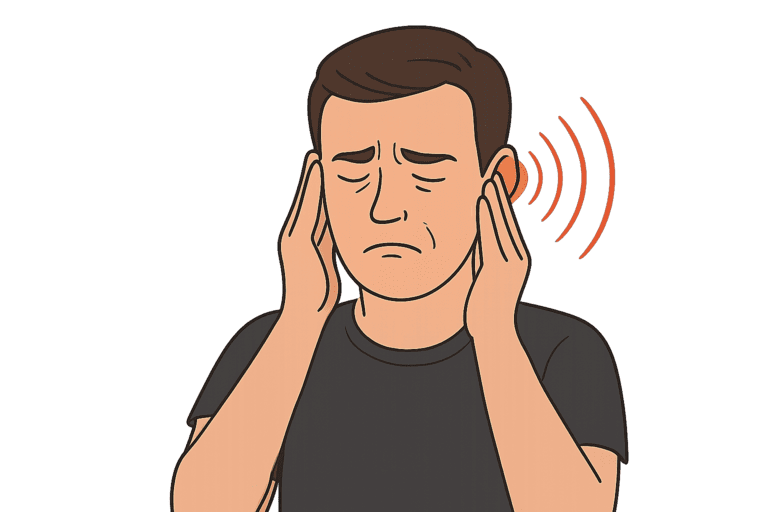
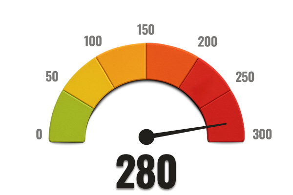
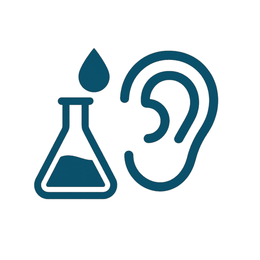
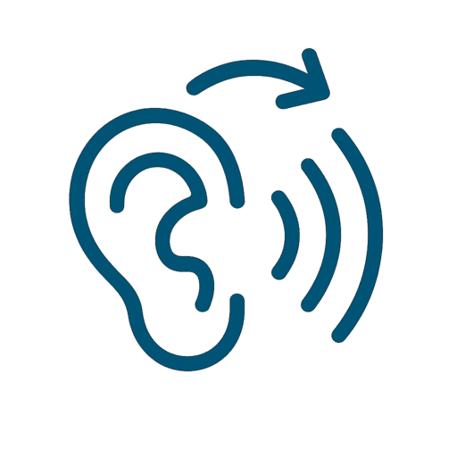
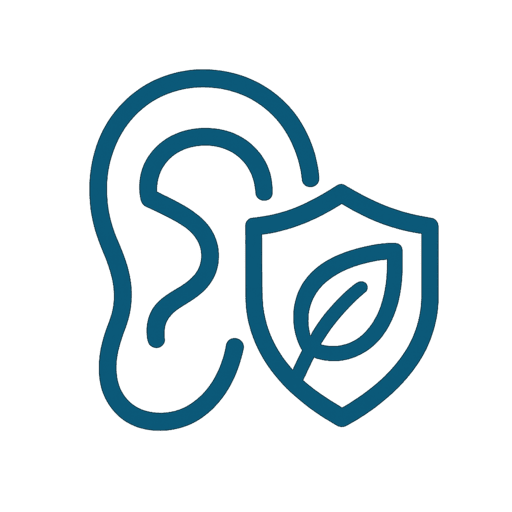

¿Cuántos años tienes?
- Menos de 30
- 30–39 años
- 40–49 años
- 50–59 años
- 60+
¿Escuchas sonidos como pitidos, zumbidos o pulsaciones en los oídos?
- Sí, constantemente
- Sí, a veces
- Ya lo sentí, pero desapareció
- Nunca lo sentí
No estás solo...
Puede que pienses que solo te pasa a ti… Pero la verdad es que millones de personas sufren con ese sonido invisible. El zumbido afecta silenciosamente la vida social, el sueño y hasta la salud mental.
No estás solo — y lo más importante: esto tiene solución.

¿Hace cuánto tiempo convives con ese sonido?
- Menos de 1 mes
- 1 a 6 meses
- 6 meses a 1 año
- Más de 1 año
¿Ese sonido afecta tu sueño o tu capacidad de concentrarte?
- Sí, interfiere mucho
- Sí, interfiere un poco
- No interfiere
- No estoy seguro
Descubre lo que el Dr. Alejandro Rivas revela en este video de 1 minuto 👇

¿Usas medicamentos con frecuencia?
- Sí, todos los días
- Sí, de vez en cuando
- Raramente
- Nunca
¿Has tomado antibióticos, aspirina o antialérgicos en los últimos meses?
- Sí
- No
- No recuerdo
¿Sufres de mareos, dolores de cabeza o estrés constante?
- Sí, frecuentemente
- Sí, a veces
- Raramente
- Nunca
El Dr. Rivas revela lo que realmente está pasando dentro de tu oído… Mira el video 👇

¿Te has hecho alguna prueba auditiva en los últimos años?
- Sí, recientemente
- Sí, hace tiempo
- No, nunca me la hice
¿Algún médico te dijo que no había nada físicamente mal con tu oído?
- Sí, más de uno
- No, siempre encontraron algo
- Nunca fui al médico
¿Cómo ha afectado esto tu vida personal o familiar?
- Me alejó de las personas
- Siento vergüenza al pedir que repitan las cosas
- He perdido calidad de vida
- No ha afectado mucho
¿Has probado audífonos, terapia sonora, medicamentos o soluciones naturales?
- Sí, varias de ellas
- Sí, pero sin resultados
- Pensé en intentar, pero no lo hice
- No, nunca intenté
¿Cómo te sientes al haber intentado todo sin resultados duraderos?
- Cansado(a) y frustrado(a)
- Aún tengo esperanza
- Estoy desilusionado(a)
- Nunca busqué soluciones
¿Has notado dificultades de memoria o concentración?
- Sí, tengo lapsos frecuentes de memoria
- Siento que mi pensamiento está más lento
- Un poco, pero podría ser cansancio
- No he notado nada diferente
Una planta olvidada podría ser la clave para recuperar tu audición… El Dr. Rivas lo explica 👇

¿Había oído hablar de tratamientos naturales para el oído y el cerebro?
- Sí, ya lo conocía
- Sí, pero nunca lo he probado
- No, es la primera vez que veo algo así
¿Cómo puede este descubrimiento transformar tu audición en la vida cotidiana?
Esta transformación va más allá de la audición: le devuelve la calidad de vida que el zumbido y la pérdida auditiva le han arrebatado silenciosamente a lo largo de los años.
Este protocolo podría ser la clave para recuperar tu audición… Míralo ahora 👇
¿Estarías dispuesto(a) a dedicar 2 minutos al día para recuperar tu audición?
- Sí, con seguridad
- Tal vez, depende de lo que sea
- No estoy seguro(a)
- No, prefiero seguir escuchando acúfenos
Mira cómo el Protocolo Vitamax ayudó a personas reales a volver a escuchar con claridad. 👇
Analizando tus respuestas...
Generando un plan personalizado para restaurar tu salud auditiva...DIAGNÓSTICO AUDITIVO: NIVEL DE INTOXICACIÓN
Después de analizar tus respuestas, identificamos un nivel crítico de intoxicación ototóxica en tu sistema auditivo.

⚠️ Nivel aceptable de toxinas auditivas: hasta 80 puntos
❌ Tu nivel actual: 280 puntos
Esto representa más de 3 veces el límite seguro para el oído humano. No se trata solo de estadísticas, sino de un daño real que ya está comprometiendo tu audición.

Intoxicación Ototóxica
Tu exposición a medicamentos con sustancias ototóxicas es muy alta. Estas toxinas inflaman el oído interno y endurecen el tímpano, reduciendo drásticamente tu capacidad para captar sonidos con claridad.

Flexibilidad del Tímpano
Reportaste síntomas como pitidos, silbidos y pérdida auditiva progresiva. Esto indica que tu tímpano ha perdido parte de su elasticidad natural, lo que provoca sonidos distorsionados o apagados.
Estrés Neurológico
El estrés provocado por el ruido constante pone a tu cerebro en alerta permanente. Esto puede explicar insomnio, ansiedad, irritabilidad, pérdida de memoria y dificultad para concentrarte.

Defensas Auditivas
Tu sistema inmunológico auditivo está debilitado. En lugar de combatir las toxinas, agrava la inflamación, acelerando la pérdida auditiva y el zumbido constante que experimentas.
ANÁLISIS FINAL:
Su oído sufre a diario ataques invisibles pero extremadamente agresivos. El diagnóstico apunta a una intoxicación avanzada, una inflamación crónica y un riesgo real de pérdida de audición permanente.
El zumbido que siente es sólo la punta del iceberg, señal de que el daño interno se encuentra en una fase avanzada.
Si no se toman medidas ahora, el riesgo de pérdida de audición permanente, confusión mental y empeoramiento de los síntomas es cada vez mayor.
Pero la buena noticia es que aún estás a tiempo de revertirlo, y eso empieza con el siguiente paso.
RECUPERA TUAUDICIÓN AHORA